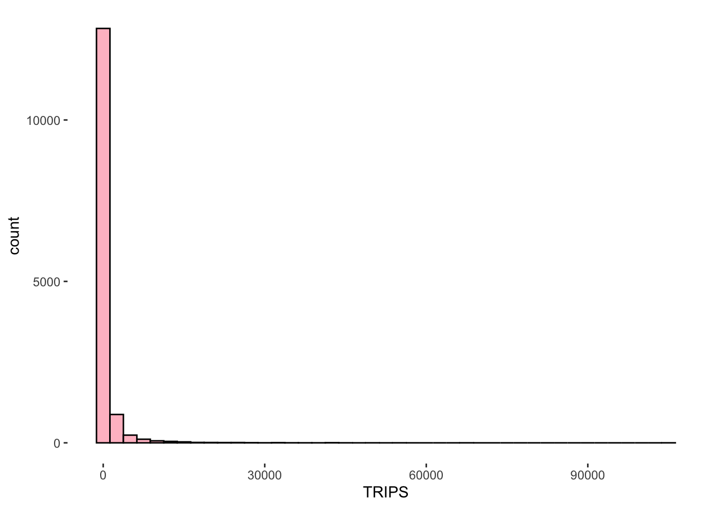

pacman::p_load(tmap, sf, sp, DT, stplanr, performance, reshape2, ggpubr, units, tidyverse)In_class_Ex03
1.1 Overview
Notes diagonals of distance matrix will be zero.
1.2 Load packages
1.3 Import data
mpsz
mpsz = st_read(dsn="data/geospatial", layer="MPSZ-2019") %>%
st_transform(crs=3414)Reading layer `MPSZ-2019' from data source
`/Users/chockwankee/Documents/chockwk/ISSS624_Geospatial_Analytics/In_class_Ex/In_class_Ex03/data/geospatial'
using driver `ESRI Shapefile'
Simple feature collection with 332 features and 6 fields
Geometry type: MULTIPOLYGON
Dimension: XY
Bounding box: xmin: 103.6057 ymin: 1.158699 xmax: 104.0885 ymax: 1.470775
Geodetic CRS: WGS 84write_rds(mpsz, "data/rds/mpsz.rds")
mpsz <- read_rds("data/rds/mpsz.rds")
mpszSimple feature collection with 332 features and 6 fields
Geometry type: MULTIPOLYGON
Dimension: XY
Bounding box: xmin: 2667.538 ymin: 15748.72 xmax: 56396.44 ymax: 50256.33
Projected CRS: SVY21 / Singapore TM
First 10 features:
SUBZONE_N SUBZONE_C PLN_AREA_N PLN_AREA_C REGION_N
1 MARINA EAST MESZ01 MARINA EAST ME CENTRAL REGION
2 INSTITUTION HILL RVSZ05 RIVER VALLEY RV CENTRAL REGION
3 ROBERTSON QUAY SRSZ01 SINGAPORE RIVER SR CENTRAL REGION
4 JURONG ISLAND AND BUKOM WISZ01 WESTERN ISLANDS WI WEST REGION
5 FORT CANNING MUSZ02 MUSEUM MU CENTRAL REGION
6 MARINA EAST (MP) MPSZ05 MARINE PARADE MP CENTRAL REGION
7 SUDONG WISZ03 WESTERN ISLANDS WI WEST REGION
8 SEMAKAU WISZ02 WESTERN ISLANDS WI WEST REGION
9 SOUTHERN GROUP SISZ02 SOUTHERN ISLANDS SI CENTRAL REGION
10 SENTOSA SISZ01 SOUTHERN ISLANDS SI CENTRAL REGION
REGION_C geometry
1 CR MULTIPOLYGON (((33222.98 29...
2 CR MULTIPOLYGON (((28481.45 30...
3 CR MULTIPOLYGON (((28087.34 30...
4 WR MULTIPOLYGON (((14557.7 304...
5 CR MULTIPOLYGON (((29542.53 31...
6 CR MULTIPOLYGON (((35279.55 30...
7 WR MULTIPOLYGON (((15772.59 21...
8 WR MULTIPOLYGON (((19843.41 21...
9 CR MULTIPOLYGON (((30870.53 22...
10 CR MULTIPOLYGON (((26879.04 26...1.4 Prepare data
Converting from sf data.table to SpatialPolygonsDataFrame
as.Spatial() will be used to convert mpsz from sf tibble data frame to SpatialPolygonsDataFrame of sp object.
mpsz_sp <- as(mpsz, "Spatial")
#mpsz_sp <- mpsz %>%
# as_Spatial()
mpsz_spclass : SpatialPolygonsDataFrame
features : 332
extent : 2667.538, 56396.44, 15748.72, 50256.33 (xmin, xmax, ymin, ymax)
crs : +proj=tmerc +lat_0=1.36666666666667 +lon_0=103.833333333333 +k=1 +x_0=28001.642 +y_0=38744.572 +ellps=WGS84 +towgs84=0,0,0,0,0,0,0 +units=m +no_defs
variables : 6
names : SUBZONE_N, SUBZONE_C, PLN_AREA_N, PLN_AREA_C, REGION_N, REGION_C
min values : ADMIRALTY, AMSZ01, ANG MO KIO, AM, CENTRAL REGION, CR
max values : YUNNAN, YSSZ09, YISHUN, YS, WEST REGION, WR Compute the distance matrix
spDists() of sp package will be used to compute the Euclidean distance between the centroids of the planning subzones
dist <- spDists(mpsz_sp, longlat = FALSE)
head(dist, n = c(5, 5)) [,1] [,2] [,3] [,4] [,5]
[1,] 0.000 3926.0025 3939.108 20252.96 2989.9839
[2,] 3926.003 0.0000 305.737 16513.86 951.8314
[3,] 3939.108 305.7370 0.000 16412.06 1045.9088
[4,] 20252.964 16513.8648 16412.062 0.00 17450.3044
[5,] 2989.984 951.8314 1045.909 17450.30 0.0000there are 332 features hence 332 points, we will limit to 5 columns and 5 rows.
usual: mpsz_sp_selected <- mpsz_sp %>% slect(mpsz@data$SUBZONE)
sp: no need
Labelling column and row heanders of a distance matrix
Create a list sorted according to the the distance matrix by planning sub-zone code.
sz_names <- mpsz$SUBZONE_C
glimpse(sz_names) chr [1:332] "MESZ01" "RVSZ05" "SRSZ01" "WISZ01" "MUSZ02" "MPSZ05" "WISZ03" ...attach SUBZONE_C to row and column for distance matrix matching ahead
paste0 concatenates vectors after converting to characters.
colnames(dist) <- paste0(sz_names)
rownames(dist) <- paste0(sz_names)Pivoting distance value by SUBZONE_C
melt() convert object into molten dataframe.
NEVER SORT THE DATA; SEQUENCE IS IMPT
distPair <- melt(dist) %>%
rename(dist = value)
head(distPair, 5) Var1 Var2 dist
1 MESZ01 MESZ01 0.000
2 RVSZ05 MESZ01 3926.003
3 SRSZ01 MESZ01 3939.108
4 WISZ01 MESZ01 20252.964
5 MUSZ02 MESZ01 2989.984Updating intra-zonal distances
append a constant value to replace the intra-zonal distance of 0.
select and find out the minimum value of the distance by using summary().
distPair %>%
filter(dist > 0) %>%
summary() Var1 Var2 dist
MESZ01 : 331 MESZ01 : 331 Min. : 173.8
RVSZ05 : 331 RVSZ05 : 331 1st Qu.: 7149.5
SRSZ01 : 331 SRSZ01 : 331 Median :11890.0
WISZ01 : 331 WISZ01 : 331 Mean :12229.4
MUSZ02 : 331 MUSZ02 : 331 3rd Qu.:16401.7
MPSZ05 : 331 MPSZ05 : 331 Max. :49894.4
(Other):107906 (Other):107906 A constant distance value of 50m is added into intra-zones distance.
distPair$dist <- ifelse(distPair$dist == 0,
50, distPair$dist)rename the origin and destination fields
distPair <- distPair %>%
rename(orig = Var1,
dest = Var2)
summary(distPair) orig dest dist
MESZ01 : 332 MESZ01 : 332 Min. : 50
RVSZ05 : 332 RVSZ05 : 332 1st Qu.: 7097
SRSZ01 : 332 SRSZ01 : 332 Median :11864
WISZ01 : 332 WISZ01 : 332 Mean :12193
MUSZ02 : 332 MUSZ02 : 332 3rd Qu.:16388
MPSZ05 : 332 MPSZ05 : 332 Max. :49894
(Other):108232 (Other):108232 write_rds(distPair, "data/rds/distPair.rds")Prepare data flow
import od_data
od_data <- read_rds("data/rds/od_data.rds")compute the total passenger trip between and within planning subzones
flow_data <- od_data %>%
group_by(ORIGIN_BS, DESTIN_BS) %>%
summarise(TRIPS = sum(MORNING_PEAK))
head(flow_data, n = 5)# A tibble: 5 × 3
# Groups: ORIGIN_BS [1]
ORIGIN_BS DESTIN_BS TRIPS
<chr> <fct> <dbl>
1 01012 01112 290
2 01012 01113 118
3 01012 01121 77
4 01012 01211 118
5 01012 01311 165Separating intra-flow from passenger volume df
Add two new fields in flow_data dataframe.
convert data value type of ORIGIN_SZ and DESTIN_SZ fields of flow_data dataframe into factor data type.
flow_data$FlowNoIntra <- ifelse(
flow_data$ORIGIN_BS == flow_data$DESTIN_BS,
0, flow_data$TRIPS)
flow_data$offset <- ifelse(
flow_data$ORIGIN_BS == flow_data$DESTIN_BS,
0.000001, 1)
flow_data$ORIGIN_BS <- as.factor(flow_data$ORIGIN_BS)
flow_data$DESTIN_BS <- as.factor(flow_data$DESTIN_BS)
head(flow_data, n = 5)# A tibble: 5 × 5
# Groups: ORIGIN_BS [1]
ORIGIN_BS DESTIN_BS TRIPS FlowNoIntra offset
<fct> <fct> <dbl> <dbl> <dbl>
1 01012 01112 290 290 1
2 01012 01113 118 118 1
3 01012 01121 77 77 1
4 01012 01211 118 118 1
5 01012 01311 165 165 1Combining passenger volume data with distance value
left_join() of dplyr will be used to flow_data dataframe and distPair dataframe.
flow_data1 <- flow_data %>%
left_join(distPair,
by = c("ORIGIN_BS" = "orig",
"DESTIN_BS" = "dest"))
glimpse(flow_data1)Rows: 239,846
Columns: 6
Groups: ORIGIN_BS [4,968]
$ ORIGIN_BS <fct> 01012, 01012, 01012, 01012, 01012, 01012, 01012, 01012, 01…
$ DESTIN_BS <fct> 01112, 01113, 01121, 01211, 01311, 07371, 60011, 60021, 60…
$ TRIPS <dbl> 290, 118, 77, 118, 165, 14, 30, 16, 35, 26, 2, 8, 1, 2, 2,…
$ FlowNoIntra <dbl> 290, 118, 77, 118, 165, 14, 30, 16, 35, 26, 2, 8, 1, 2, 2,…
$ offset <dbl> 1, 1, 1, 1, 1, 1, 1, 1, 1, 1, 1, 1, 1, 1, 1, 1, 1, 1, 1, 1…
$ dist <dbl> NA, NA, NA, NA, NA, NA, NA, NA, NA, NA, NA, NA, NA, NA, NA…Preparing Origin and Destination Attributes
pop <- read_csv("data/aspatial/pop.csv")
glimpse(pop)Rows: 332
Columns: 5
$ PA <chr> "ANG MO KIO", "ANG MO KIO", "ANG MO KIO", "ANG MO KIO", "ANG …
$ SZ <chr> "ANG MO KIO TOWN CENTRE", "CHENG SAN", "CHONG BOON", "KEBUN B…
$ AGE7_12 <dbl> 310, 1140, 1010, 1050, 420, 810, 390, 980, 0, 260, 0, 1190, 6…
$ AGE13_24 <dbl> 710, 2770, 2650, 2390, 1120, 1920, 1150, 2000, 0, 650, 0, 326…
$ AGE25_64 <dbl> 2780, 15700, 14240, 12460, 3620, 9650, 4350, 11320, 0, 2500, …Geospatial data wrangling
Add SZ to pop
pop <- pop %>%
left_join(mpsz,
by = c("PA" = "PLN_AREA_N",
"SZ" = "SUBZONE_N")) %>%
select(1:6) %>%
rename(SZ_NAME = SZ,
SZ = SUBZONE_C)
glimpse(pop)Rows: 332
Columns: 6
$ PA <chr> "ANG MO KIO", "ANG MO KIO", "ANG MO KIO", "ANG MO KIO", "ANG …
$ SZ_NAME <chr> "ANG MO KIO TOWN CENTRE", "CHENG SAN", "CHONG BOON", "KEBUN B…
$ AGE7_12 <dbl> 310, 1140, 1010, 1050, 420, 810, 390, 980, 0, 260, 0, 1190, 6…
$ AGE13_24 <dbl> 710, 2770, 2650, 2390, 1120, 1920, 1150, 2000, 0, 650, 0, 326…
$ AGE25_64 <dbl> 2780, 15700, 14240, 12460, 3620, 9650, 4350, 11320, 0, 2500, …
$ SZ <chr> "AMSZ01", "AMSZ02", "AMSZ03", "AMSZ06", "AMSZ07", "AMSZ05", "…SIM_data <- read_rds("data/rds/SIM_data.rds")
glimpse(SIM_data)Rows: 14,274
Columns: 12
Groups: ORIGIN_SZ [279]
$ ORIGIN_SZ <chr> "AMSZ01", "AMSZ01", "AMSZ01", "AMSZ01", "AMSZ01", "AMS…
$ DESTIN_SZ <chr> "AMSZ02", "AMSZ03", "AMSZ04", "AMSZ05", "AMSZ06", "AMS…
$ TRIPS <dbl> 6790, 7242, 2048, 4594, 1767, 1136, 1703, 1494, 41, 39…
$ FlowNoIntra <dbl> 6790, 7242, 2048, 4594, 1767, 1136, 1703, 1494, 41, 39…
$ offset <dbl> 1, 1, 1, 1, 1, 1, 1, 1, 1, 1, 1, 1, 1, 1, 1, 1, 1, 1, …
$ dist <dbl> 810.4491, 1360.9294, 840.4432, 1076.7916, 805.2979, 17…
$ ORIGIN_AGE7_12 <dbl> 310, 310, 310, 310, 310, 310, 310, 310, 310, 310, 310,…
$ ORIGIN_AGE13_24 <dbl> 710, 710, 710, 710, 710, 710, 710, 710, 710, 710, 710,…
$ ORIGIN_AGE25_64 <dbl> 2780, 2780, 2780, 2780, 2780, 2780, 2780, 2780, 2780, …
$ DESTIN_AGE7_12 <dbl> 1140, 1010, 980, 810, 1050, 420, 390, 1190, 0, 0, 260,…
$ DESTIN_AGE13_24 <dbl> 2770, 2650, 2000, 1920, 2390, 1120, 1150, 3260, 0, 0, …
$ DESTIN_AGE25_64 <dbl> 15700, 14240, 11320, 9650, 12460, 3620, 4350, 13350, 0…1.4 Explore data
1.5 Plot data
Calibrating Spatial Interaction Models
Visualising the dependent variable
plot the distribution of the dependent variable (i.e. TRIPS) by using histogram
ggplot(data = SIM_data, aes(x = TRIPS)) +
geom_histogram(fill = "pink", color = "black",
binwidth = 2500) +
theme(
panel.background = element_blank()
)
isualise the relation between the dependent variable and one of the key independent variable in Spatial Interaction Model, namely distance.
ggplot(data = SIM_data,
aes(x = dist,
y = TRIPS)) +
geom_point(size = 1, colour = "lightblue") +
geom_smooth(method = lm) +
theme(
panel.background = element_blank()
)
plot the scatter plot by using the log transformed version of both variables, we can see that their relationship is more resemble linear relationship.
ggplot(data = SIM_data,
aes(x = log(dist),
y = log(TRIPS))) +
geom_point(size = 1, colour = "lightblue") +
labs(title = "Trips by Distance") +
geom_smooth(method = lm) +
theme(
panel.background = element_blank()
)